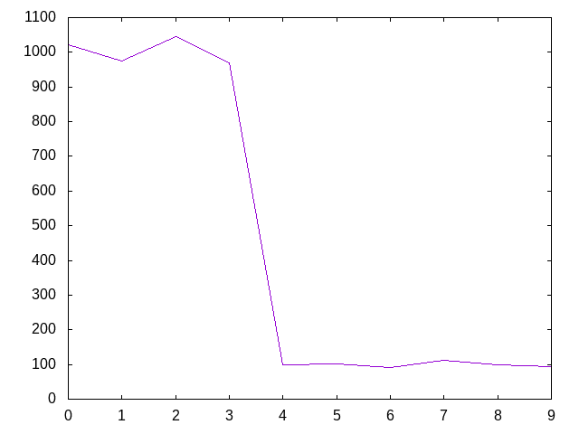
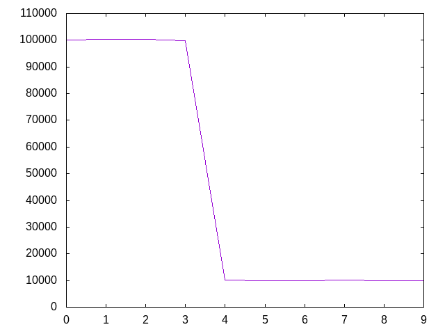

Números primos en pi
El fichero Digitos_de_pi.txt contiene el número pi con un millón de decimales; es decir,
3.1415926535897932384626433832 ... 83996346460422090106105779458151
Definir las funciones
nOcurrenciasPrimosEnPi :: Int -> Int -> IO [Int] graficaPrimosEnPi :: Int -> Int -> IO ()
tales que
- (nOcurrenciasPrimosEnPi n k) es la lista de longitud n cuyo i-ésimo elemento es el número de ocurrencias del i-ésimo número primo en los k primeros decimales del número pi. Por ejemplo,
nOcurrenciasPrimosEnPi 4 20 == [2,3,3,1]
ya que los 20 primeros decimales de pi son 14159265358979323846 y en ellos ocurre el 2 dos veces, el 3 ocurre 3 veces, el 5 ocurre 3 veces y el 7 ocurre 1 vez. Otros ejemplos son
λ> nOcurrenciasPrimosEnPi 10 100 [12,11,8,8,1,0,1,1,2,0] λ> nOcurrenciasPrimosEnPi 10 (10^4) [1021,974,1046,970,99,102,90,113,99,95] λ> nOcurrenciasPrimosEnPi 10 (10^6) [100026,100229,100359,99800,10064,10012,9944,10148,9951,9912]
- (graficaPrimosEnPi n k) dibuja la gráfica del número de ocurrencias de los n primeros números primos en los k primeros dígitos de pi. Por ejemplo, (graficaPrimosEnPi 10 (10^4)) dibuja 
(graficaPrimosEnPi 10 (10^6)) dibuja

y (graficaPrimosEnPi 50 (10^5)) dibuja

Soluciones
import Data.List ( isPrefixOf , findIndices , tails ) import Data.Numbers.Primes ( primes) import Graphics.Gnuplot.Simple ( Attribute (Key, PNG) , plotList ) -- Definición de nOcurrenciasPrimosEnPi -- ==================================== nOcurrenciasPrimosEnPi :: Int -> Int -> IO [Int] nOcurrenciasPrimosEnPi n k = do (_:_:ds) <- readFile "Digitos_de_pi.txt" let ps = take n primes let es = take k ds return [nOcurrencias (show x) es | x <- ps] -- (nOcurrencias xs yss) es el número de ocurrencias de xs en yss. Por -- ejemplo, -- nOcurrencias "ac" "acbadcacaac" == 3 nOcurrencias :: Eq a => [a] -> [a] -> Int nOcurrencias xs yss = length (ocurrencias xs yss) -- (ocurrencias xs yss) es el índice de las posiciones del primer -- elemento de xs en las ocurrencias de xs en yss. Por ejemplo, -- ocurrencias "ac" "acbadcacaac" == [0,6,9] ocurrencias :: Eq a => [a] -> [a] -> [Int] ocurrencias xs yss = findIndices (xs `isPrefixOf`) (tails yss) -- Definición de graficaPrimosEnPi -- =============================== graficaPrimosEnPi :: Int -> Int -> IO () graficaPrimosEnPi n k = do xs <- nOcurrenciasPrimosEnPi n k plotList [ Key Nothing , PNG ("Numeros_primos_en_pi_" ++ show (n,k) ++ ".png") ] xs